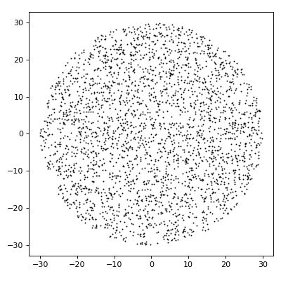
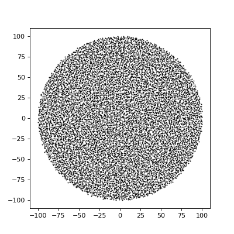

Point pattern¶
- class structure_factor.point_pattern.PointPattern(points, window=None, intensity=None)[source]¶
Bases:
objectEncapsulate a realization of a point process: the sampled points, the observation window, and the intensity of underlying point process.
Note
Typical usage:
The class
StructureFactorgets initialized using aPointPattern,Convert Python
PointPatternobject to aspatstatpoint pattern R object usingconvert_to_spatstat_ppp().
Example
#load points points = load_data.load_ginibre().points #create BallWindow window = BallWindow(center=[0,0], radius=100) #create PointPattern object ginibre_pp = PointPattern(points, window)
- property dimension¶
Ambient dimension of the space where the points live.
- restrict_to_window(window)[source]¶
Return a new instance of
PointPatternwith the following attributes.points: points of the original object that fall inside the prescribed
window,window: prescribed
window,intensity: same intensity as the original object.
- Parameters
window (AbstractSpatialWindow) – new observation window to restrict to.
- Returns
restriction of the
PointPatternto the prescribedwindow.- Return type
Example
from structure_factor.data import load_data from structure_factor.spatial_windows import BoxWindow # load Ginibre PointPattern ginibre_pp = load_data.load_ginibre() # create box window L = 70 # sidelength of the window bounds = [[-L / 2, L / 2], [-L / 2, L / 2]] # bounds of the window window = BoxWindow(bounds) # create a cubic window # restrict to window ginibre_pp_box = ginibre_pp.restrict_to_window(window) # plot the result ginibre_pp_box.plot()
(Source code, png, hires.png, pdf)

- convert_to_spatstat_ppp(**params)[source]¶
Convert the object attributes
pointsandwindowinto a point patternspatstat.geom.pppR object.- Keyword Arguments
params (dict) – optional keyword arguments passed to
spatstat.geom.ppp.- Returns
Point pattern R object of type
spatstat.geom.ppp.
- plot(axis=None, window_res=None, file_name='', **kwargs)[source]¶
Display scatter plot of the attribute
points.- Parameters
axis (matplotlib.axis, optional) – support axis of the plot. Defaults to None.
window_res (AbstractSpatialWindow, optional) – window used to visualized the plot. Defaults to None.
- Returns
plot axis.
- Return type
matplotlib.axis
Example
from structure_factor.data import load_data # load PointPattern ginibre_pp = load_data.load_ginibre() # plot PointPattern ginibre_pp.plot()
(Source code, png, hires.png, pdf)

{kind=link}
{kind=link}
{kind=link}
{kind=link}